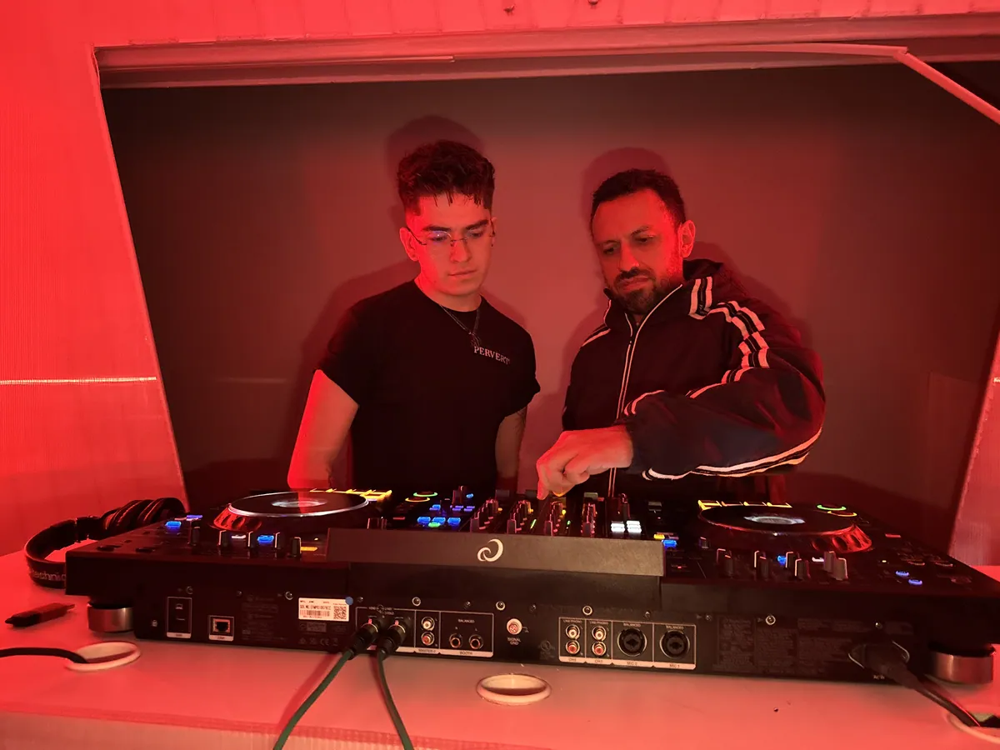

Equipo y cadena de grabación
Identifica los elementos que conectan la voz con la computadora.
- Interfaces de audio y requisitos de computadora
- Micrófonos dinámicos, condensadores, listón y bulbo
- Cables XLR, TRS y TS; conexión de hardware y software
Sounds / Especialización
Trabaja la voz desde la captura hasta su lugar en la mezcla.
Conecta equipo, preparación de sesión, edición y tratamiento vocal. Durante 4 semanas explorarás un flujo de trabajo para incorporar voces a tus producciones.
01 / TU PUNTO DE PARTIDA
Para quienes quieren incorporar grabaciones vocales a sus producciones.
Micrófono, conexión, ganancia y sesión influyen en lo que podrás trabajar después. El programa relaciona esas decisiones con la edición, afinación y mezcla de una voz sobre un beat.
Comprender la cadena de equipo y señal para una grabación vocal.
Preparar una sesión y ajustar la ganancia de captura.
Explorar edición, corrección de afinación y procesamiento de voces.
02 / DE LA IDEA A LA PRÁCTICA
Explora el temario agrupado por temas. Consulta con Soundspace los módulos y su distribución en el programa vigente.
Identifica los elementos que conectan la voz con la computadora.
Organiza la sesión y el recorrido de la señal antes de grabar.
Explora el tratamiento del material grabado.
Relaciona el tratamiento de la voz con el resto de la producción.
Consulta el temario vigente, resuelve tus dudas o descubre la ruta que conecta con tus intereses.
03 / LO QUE SUMA A TU FORMACIÓN
Conoce los componentes del programa y cómo contribuyen a tu proceso creativo.
Formación que conecta la selección y configuración del equipo con la captura de la voz.
Herramientas para trabajar clips de audio y comprender la corrección de afinación con Melodyne.
Procesamiento dinámico y de tiempo, junto con mezcla de voz en un beat, para dar contexto musical a la grabación.
Confirma con el equipo el alcance, los requisitos y las condiciones de tu grupo.
Consultar qué incluye
UN ESPACIO PARA CREAR / CONDESA04 / EL ENTORNO TAMBIÉN TE FORMA
Tu formación en Grabación Vocal 101 sucede en una academia donde conviven música, arte multimedia y desarrollo de proyectos.
Acércate a la práctica de personas que participan en la industria musical y comparten su experiencia.
Explora las instalaciones reales de la academia en Vicente Suárez 38. Consulta la modalidad y el equipo de tu programa.
Conecta tu formación con otras áreas: DJ, producción musical, experiencias inmersivas y negocios de la música.
05 / ANTES DE EMPEZAR
No necesitas resolverlo todo hoy. Estas sugerencias ayudan al equipo a orientar tu consulta sobre Grabación Vocal 101.
Consulta por WhatsApp los costos, horarios, próximas aperturas y requisitos vigentes.
06 / RESUELVE TUS DUDAS
Es una formación en grabación y tratamiento de voces: equipo, configuración, captura, edición y mezcla vocal.
Sí. El temario incluye Melodyne y corrección de afinación, además de edición de voces y clips de audio.
El programa aborda tipos de interfaces, su configuración y micrófonos dinámicos, condensadores, de listón y de bulbo. También trabaja conexiones, ruteo y ajuste de ganancia.
La especialización dura 4 semanas y se imparte en modalidad presencial. Consulta con el equipo las fechas, los materiales y los requisitos vigentes.
TU SIGUIENTE PASO
Si estás explorando, descubre tu ruta. Si Grabación Vocal 101 ya conecta contigo, habla con el equipo para conocer cómo inscribirte.